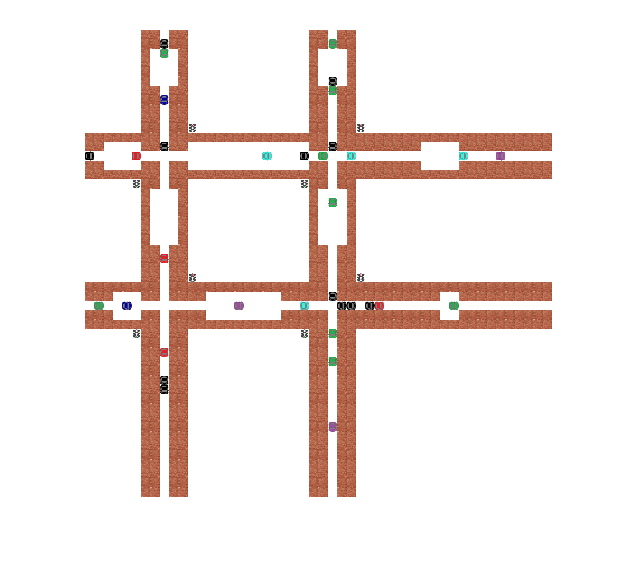
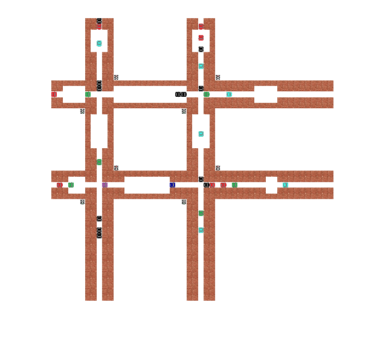
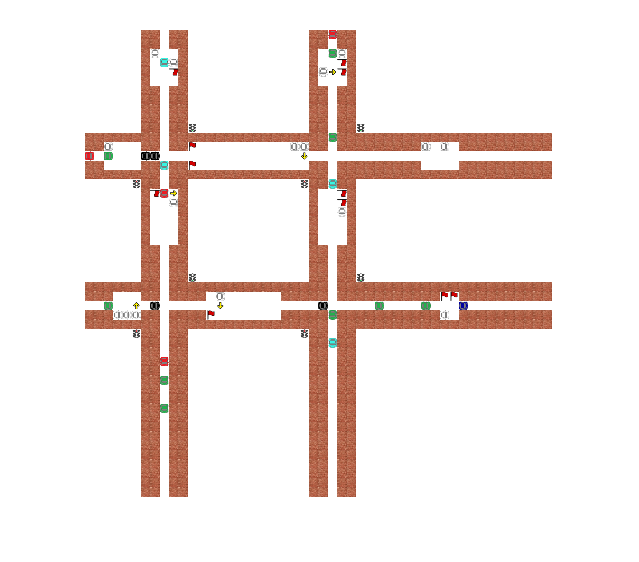
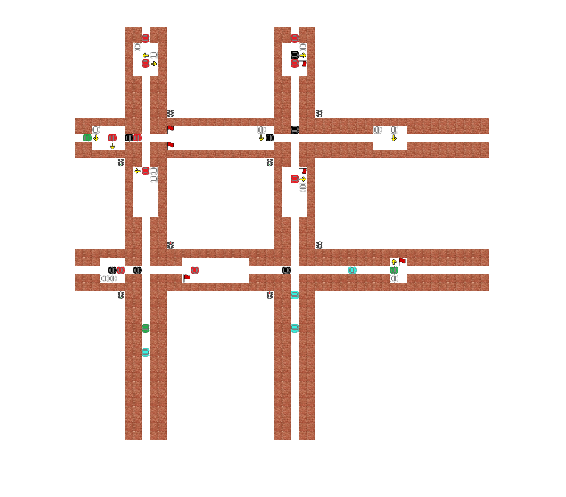
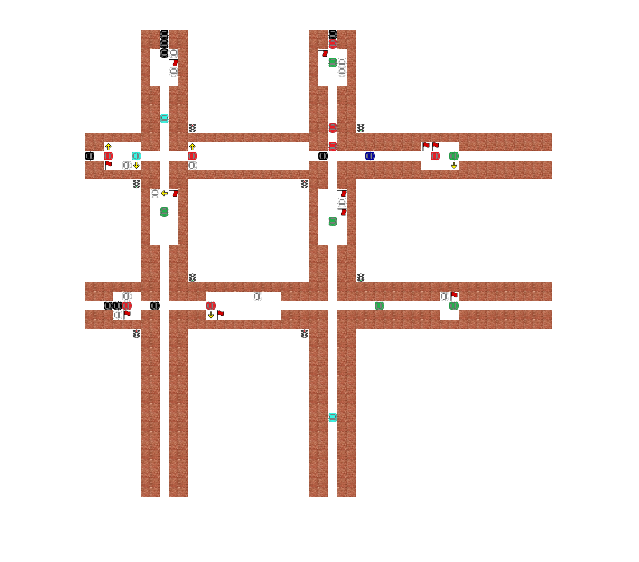
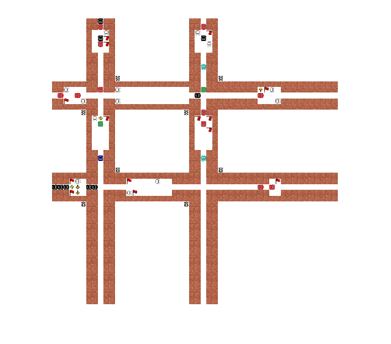
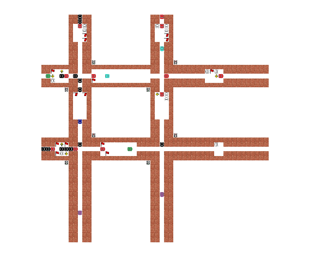

clear;
clc;
new_car_prob = 0.7;
dec_prob = 0.20;
park_prob = 0.5;
first_park = 5;
last_park = 40;
chance_of_not_having_flag = 0.15;
max_parked = 5;
cars1 = 8;
cars2 = 8;
cars3 = 8;
cars4 = 8;
intersection = [14 9];
intersection2 = [14 27];
intersection3 = [30 9];
intersection4 = [30 27];
max_red = 6;
thr_press = 5;
top_is_red = [1 1 1 1];
left_is_red = [0 0 0 0];
count_red_left = [0 0 0 0];
count_red_top = [0 0 0 0];
delay_signal = [0 0 0 0];
full_road = zeros(50,50);
[iter,~] = size(full_road);
full_road(:,:) = -1;
[full_road,hor_lane,hor2_lane,vert_lane,vert2_lane,hor_steps_parked,hor2_steps_parked,vert_steps_parked,vert2_steps_parked,hor_park_signals,hor2_park_signals,vert_park_signals,vert2_park_signals,hor_park_flags,hor2_park_flags,vert_park_flags,vert2_park_flags] = initialize_road(full_road,cars1,cars2,cars3,cars4,intersection,intersection2,intersection3,intersection4,first_park,last_park);
for e=2:1:20
for roads=1:4
if (roads == 1)
[hor_lane,hor_park_signals,hor_park_flags,hor_change_signals] = move(hor_lane,new_car_prob,hor_park_signals,hor_park_flags,dec_prob,park_prob);
elseif (roads == 2)
[vert_lane,vert_park_signals,vert_park_flags,vert_change_signals] = move(vert_lane,new_car_prob,vert_park_signals,vert_park_flags,dec_prob,park_prob);
elseif (roads == 3)
[vert2_lane,vert2_park_signals,vert2_park_flags,vert2_change_signals] = move(vert2_lane,new_car_prob,vert2_park_signals,vert2_park_flags,dec_prob,park_prob);
elseif (roads == 4)
[hor2_lane,hor2_park_signals,hor2_park_flags,hor2_change_signals] = move(hor2_lane,new_car_prob,hor2_park_signals,hor2_park_flags,dec_prob,park_prob);
end
end
for inter=1:4
if (inter == 1)
[vert_lane,hor_lane,vert_park_signals,hor_park_signals,vert_park_flags,hor_park_flags,delay_signal(inter)] = moving_from_inter(left_is_red(inter),top_is_red(inter),vert_lane,hor_lane,vert_park_signals,hor_park_signals,vert_park_flags,hor_park_flags,intersection);
elseif (inter == 2)
[vert2_lane,hor_lane,vert2_park_signals,hor_park_signals,vert2_park_flags,hor_park_flags,delay_signal(inter)] = moving_from_inter(left_is_red(inter),top_is_red(inter),vert2_lane,hor_lane,vert2_park_signals,hor_park_signals,vert2_park_flags,hor_park_flags,intersection2);
elseif (inter == 3)
[vert_lane,hor2_lane,vert_park_signals,hor2_park_signals,vert_park_flags,hor2_park_flags,delay_signal(inter)] = moving_from_inter(left_is_red(inter),top_is_red(inter),vert_lane,hor2_lane,vert_park_signals,hor2_park_signals,vert_park_flags,hor2_park_flags,intersection3);
elseif (inter == 4)
[vert2_lane,hor2_lane,vert2_park_signals,hor2_park_signals,vert2_park_flags,hor2_park_flags,delay_signal(inter)] = moving_from_inter(left_is_red(inter),top_is_red(inter),vert2_lane,hor2_lane,vert2_park_signals,hor2_park_signals,vert2_park_flags,hor2_park_flags,intersection4);
end
end
for roads=1:4
if (roads == 1)
[hor_lane,hor_temp,hor_park_flags,hor_steps_parked,hor_park_signals] = parking(hor_lane,hor_park_signals,hor_change_signals,hor_park_flags,hor_steps_parked,last_park,e);
elseif (roads == 2)
[vert_lane,vert_temp,vert_park_flags,vert_steps_parked,vert_park_signals] = parking(vert_lane,vert_park_signals,vert_change_signals,vert_park_flags,vert_steps_parked,last_park,e);
elseif (roads == 3)
[vert2_lane,vert2_temp,vert2_park_flags,vert2_steps_parked,vert2_park_signals] = parking(vert2_lane,vert2_park_signals,vert2_change_signals,vert2_park_flags,vert2_steps_parked,last_park,e);
elseif (roads == 4)
[hor2_lane,hor2_temp,hor2_park_flags,hor2_steps_parked,hor2_park_signals] = parking(hor2_lane,hor2_park_signals,hor2_change_signals,hor2_park_flags,hor2_steps_parked,last_park,e);
end
end
[full_road,count_red_top,count_red_left] = copying_roads(full_road,hor_temp,hor2_temp,vert_temp,vert2_temp,intersection,intersection2,intersection3,intersection4,count_red_top,count_red_left,top_is_red,left_is_red);
draw(full_road,intersection,intersection2,intersection3,intersection4);
for inter=1:4
if (inter == 1)
[hor_lane,vert_lane,left_is_red(inter),top_is_red(inter),count_red_left(inter),count_red_top(inter)] = change_traffic_light(vert_lane,hor_lane,max_red,thr_press,count_red_left(inter),count_red_top(inter),delay_signal(inter),intersection);
elseif (inter == 2)
[hor_lane,vert2_lane,left_is_red(inter),top_is_red(inter),count_red_left(inter),count_red_top(inter)] = change_traffic_light(vert2_lane,hor_lane,max_red,thr_press,count_red_left(inter),count_red_top(inter),delay_signal(inter),intersection2);
elseif (inter == 3)
[hor2_lane,vert_lane,left_is_red(inter),top_is_red(inter),count_red_left(inter),count_red_top(inter)] = change_traffic_light(vert_lane,hor2_lane,max_red,thr_press,count_red_left(inter),count_red_top(inter),delay_signal(inter),intersection3);
elseif (inter == 4)
[hor2_lane,vert2_lane,left_is_red(inter),top_is_red(inter),count_red_left(inter),count_red_top(inter)] = change_traffic_light(vert2_lane,hor2_lane,max_red,thr_press,count_red_left(inter),count_red_top(inter),delay_signal(inter),intersection4);
end
end
if top_is_red(1)==1, full_road(intersection(1)-3,intersection(2)+3) = 10; else, full_road(intersection(1)-3,intersection(2)+3) = 11; end
if left_is_red(1)==1, full_road(intersection(1)+3,intersection(2)-3) = 10; else, full_road(intersection(1)+3,intersection(2)-3) = 11; end
if top_is_red(2)==1, full_road(intersection2(1)-3,intersection2(2)+3) = 10; else, full_road(intersection2(1)-3,intersection2(2)+3) = 11; end
if left_is_red(2)==1, full_road(intersection2(1)+3,intersection2(2)-3) = 10; else, full_road(intersection2(1)+3,intersection2(2)-3) = 11; end
if top_is_red(3)==1, full_road(intersection3(1)-3,intersection3(2)+3) = 10; else, full_road(intersection3(1)-3,intersection3(2)+3) = 11; end
if left_is_red(3)==1, full_road(intersection3(1)+3,intersection3(2)-3) = 10; else, full_road(intersection3(1)+3,intersection3(2)-3) = 11; end
if top_is_red(4)==1, full_road(intersection4(1)-3,intersection4(2)+3) = 10; else, full_road(intersection4(1)-3,intersection4(2)+3) = 11; end
if left_is_red(4)==1, full_road(intersection4(1)+3,intersection4(2)-3) = 10; else, full_road(intersection4(1)+3,intersection4(2)-3) = 11; end
end
Warning: Image is too big to fit on screen; displaying at 33%
Warning: Image is too big to fit on screen; displaying at 33%
Warning: Image is too big to fit on screen; displaying at 33%
Warning: Image is too big to fit on screen; displaying at 33%
Warning: Image is too big to fit on screen; displaying at 33%
Warning: Image is too big to fit on screen; displaying at 33%
Warning: Image is too big to fit on screen; displaying at 33%
Warning: Image is too big to fit on screen; displaying at 33%
Warning: Image is too big to fit on screen; displaying at 33%
side =
3
e =
10
Someone took your parking spot move to new spot:40
Unfortunately someone took your parking spot and we cant find new pos near
Warning: Image is too big to fit on screen; displaying at 33%
Warning: Image is too big to fit on screen; displaying at 33%
Warning: Image is too big to fit on screen; displaying at 33%
Warning: Image is too big to fit on screen; displaying at 33%
Warning: Image is too big to fit on screen; displaying at 33%
Warning: Image is too big to fit on screen; displaying at 33%
Warning: Image is too big to fit on screen; displaying at 33%
side =
3
e =
17
Someone took your parking spot move to new spot:5
side =
3
e =
17
Someone took your parking spot move to new spot:6
Warning: Image is too big to fit on screen; displaying at 33%
Warning: Image is too big to fit on screen; displaying at 33%
Warning: Image is too big to fit on screen; displaying at 33%
side =
3
e =
20
Someone took your parking spot move to new spot:6
Warning: Image is too big to fit on screen; displaying at 33%
 


   

